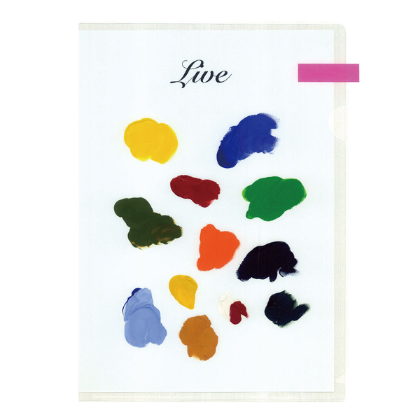

안녕하세요 라보엠입니다.
아직은 날이 차지만, 따뜻함이 조금씩 찾아 오는 것 같은 기분이 드는 늦겨울입니다. 오늘은 따뜻한 봄날을 빨리 맞이하고싶은 마음을 담아 정준일의 너에게 라는 노래를 소개해드리겠습니다.
정준일 - 너에게 MV
정준일의 너에게는 2014년 정준일의 오케스트라 콘서트를 담은 라이브 앨범 Live 에 신곡으로 수록된 곡입니다. 전주도 없이 훅 들어오는 이 노래는 그동안 함께한 사람들에 대한 감사를 담아 만든 곡입니다. 뮤직비디오는 변요한과 김윤혜가 주인공으로 헤어지는 연인의 마지막 뒷모습을 담담하게 담아냈습니다. 뮤비의 촬영 장소는 삼청동으로 사람들이 제일 많이 찾는 삼청로의 윗길입니다. 사진 찍으러 여러번 갔었던 곳입니다. 마침 TV를 틀었는데 어서와 한국은 처음이지에서 피지MZ 들이 DAY 2일차에 방문한곳이 북촌 한옥마을입니다. 바로 이 촬영지를 지나가는게 나와서 깜짝 놀랐습니다.
정준일 너에게 촬영 장소
정준일 너에게 뮤직비디오 촬영지의 위치는
서울시 종로구 북촌로5나길 입니다.
지도는 제공되지 않습니다.
정준일 너에게 가사
1.
한참을 나 걸어왔어 깊은 덤불을 지나
새벽의 종소리가 울리면 곁으로 갈게
더딘 걸음걸음으로 힘겹게 네게 닿을 때
소리 없이 날 안아줄 거지? 난 정말 고마워
세상의 모든 미움이 나를 향해 있을 때
숨죽여 소리 없이 날 위해 울어주던 너
한없이 여리기만 한 내가 아파할까 봐
등 뒤로 날 숨긴 채 함께 걸어주던 너
이 넓은 세상의 끝 머나먼 긴 여정의 끝
너와 함께 간다면 나는 두려울 게 없는걸
우리 찬란하게 빛나던 만큼
누구보다 널 아끼고 사랑할 나잖아
태양보다 뜨겁게 저 달보다 따뜻하게
별 보다 더 환하게 너의 날들을 비춰줄게
끝도 없는 푸른 지평선 달리고 달려
우리 약속했던 그곳에서 꼭 만나자
2.
반짝이던 빛을 따라 한없이 걸었던 길
우린 무얼 위해 달렸을까?
아무것도 나 손에 쥐지 못한 채로 울며 돌아섰던 날
여전히 그 자리에 내게 웃어주던 너
이 넓은 세상의 끝 머나먼 긴 여정의 끝
너와 함께 간다면 나는 두려울 게 없는걸
우리 찬란하게 빛나던 만큼
누구보다 널 아끼고 사랑할 나잖아
태양보다 뜨겁게 저 달보다 따뜻하게
별 보다 더 환하게 너의 날들을 비춰줄게
끝도 없는 푸른 지평선 달리고 달려
우리 처음 널 만났던 때로 약속했던 그곳에서 꼭 만나자
(간주)
우리 함께 흘린 눈물 그 만큼
누구보다 널 아끼고 사랑할 나일테니
태양보다 뜨겁게 저 달보다 따뜻하게
별 보다 더 환하게 너의 날들을 비춰줄게
끝도 없는 푸른 지평선 달리고 달려
우리 처음 널 만났던 때로 약속했던 그곳에서 꼭 만나자
